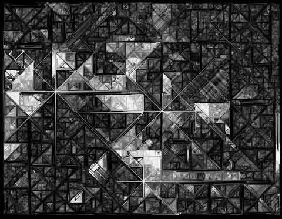

Juergen Schwietering
ALGORITHMIC ART
NOTES
Juergen Schwietering is an Italian-based computer software engineer. Born 1964, he earned a computer science degree from the University of Bremen in 1993. His mother tongue is Dutch. He has researched and published widely in such fields as computer music, fractals and computer graphics. The works shown here are "fractal plane-filling procedures" programmed by the artist. They are often based on actual photographs or paintings, as careful observation may reveal. Juergen's other interests include jamming with the guitar, snowboarding and surfing, and the boomerang. His art-and-music has been publickly exhibited at the Bremen Town Hall.
Three stars, No. 1
|
 |